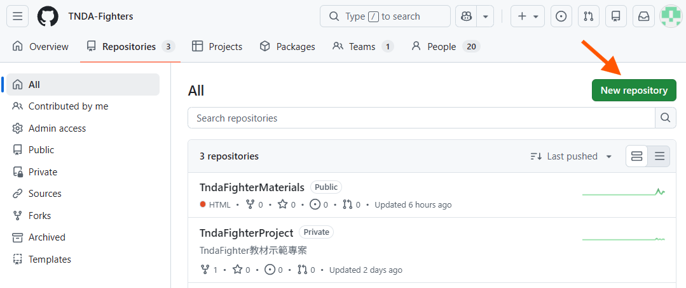
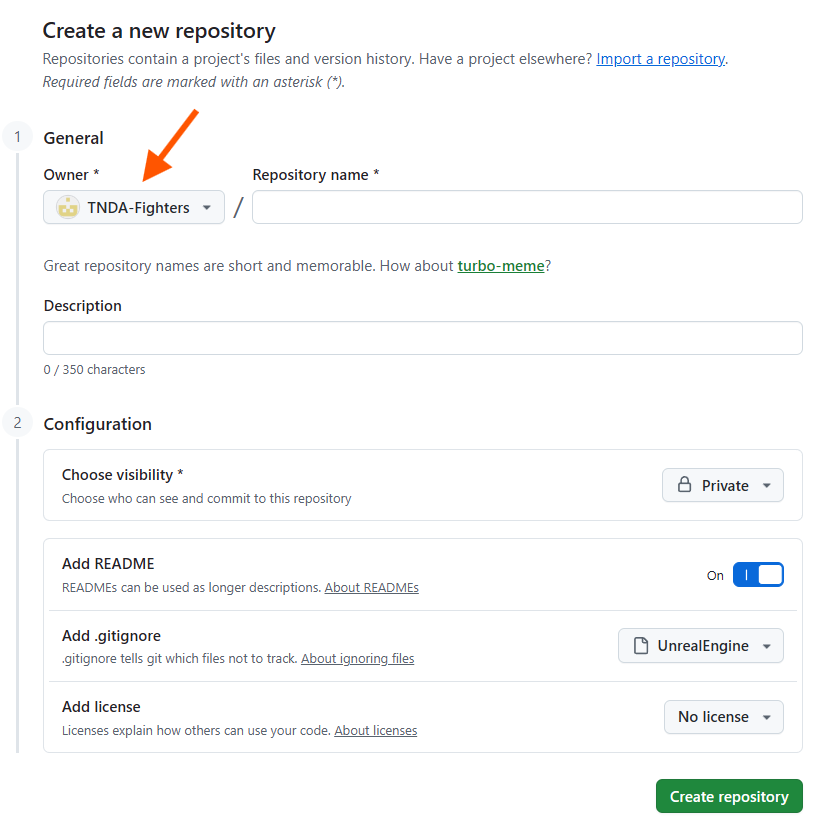
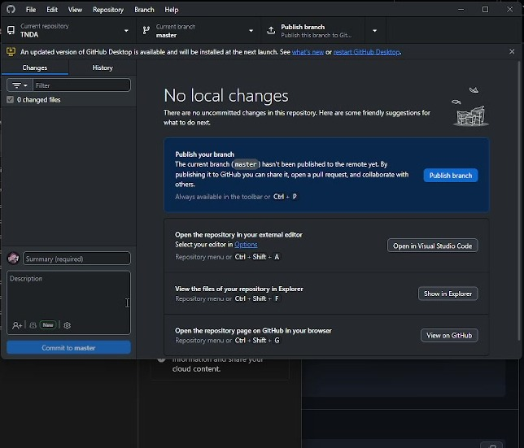
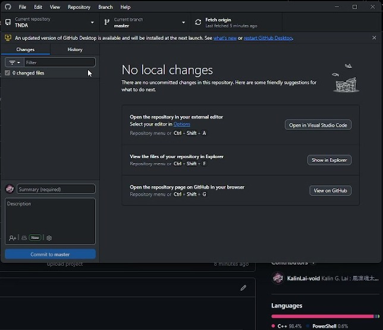
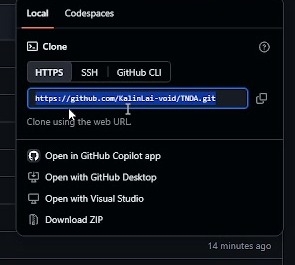

Git 基本操作把 UE 專案上傳、同步，並完成作業繳交
從第一個儲存庫開始，學會把修改記錄成版本，再把最新成果交到 GitHub。以 GitHub Desktop 操作為主，附實際操作畫面與指令補充。
- 取得更新Fetch/Pull
- 修改與儲存Modify/Save
- CommitCommit
- 推送更新Push
- 網頁確認Check
Git 是什麼？為什麼需要版本控制？
Git 幫你記錄專案怎麼改變
Git 是一套分散式版本控制工具。它能把你選定的檔案狀態記錄成一次次 Commit，保留提交訊息、作者與歷史關係，方便日後查閱、比較或取回先前版本。一般的本機 Git 儲存庫也保存版本歷史，因此沒有網路時仍能檢查歷史、繼續修改與提交；需要與遠端同步時才必須連線。
GitHub 是放置遠端儲存庫的服務；GitHub Desktop 則是本課用來操作 Git 的圖形工具。你在 Desktop 按 Commit，是在本機記錄版本；按 Push，才會把提交傳到 GitHub。
為什麼不只一直按儲存
假設你先完成角色移動，再加入攻擊，接著調整鏡頭後卻發現角色不見了。如果只保留目前檔案，就很難知道哪次修改造成問題；若每個階段都留下清楚的提交，就能比較前後變動，找出問題，並視需要取回先前已記錄的內容。
| 開發時的需要 | 版本控制如何協助 |
|---|---|
| 知道這一版改了什麼 | 從 History 與提交訊息找到修改目的，再檢查該次變動。 |
| 找出改壞的地方 | 比較可用版本與目前版本；程式碼可查看文字差異，UE 資產可能需要在編輯器中另外核對。 |
| 保留可繼續開發的進度 | 每完成一個有意義的修改就提交，避免只靠「最終版」「最終版2」等資料夾名稱辨識。 |
| 換電腦或讓別人檢查 | 將提交推送到遠端，再由另一台電腦或獲授權的人取得專案。 |
把儲存與記錄版本分開理解
Save 把修改寫入目前檔案；Commit 把選取的修改留下版本紀錄；Push 把本機提交傳到遠端。Git 不會自動替每次按鍵或每次儲存建立提交，也無法保證找回從未保存或提交的工作。
本課先掌握一個習慣：完成一項能說清楚的修改，確認結果後，回到 Desktop 檢查 Changes、填寫 Summary、Commit，再 Push。版本控制可以協助保存開發歷史；未追蹤、被忽略的檔案，以及尚未上傳的 LFS 資產，仍需另外確認是否保存完整。
學習目標與基本觀念
本講義帶你把 UE 專案放進自己的 GitHub 儲存庫，記錄每次修改，並在另一個資料夾取回專案。完成後，你應能提供可供老師檢查的儲存庫網址，並說明最新版本做了哪些修改。
開始前先準備
- 登入自己的 GitHub 帳號（若沒有請先註冊），安裝並登入 GitHub Desktop。
- 準備課程指定的 UE 專案，以及可正常開啟該專案的引擎版本。
- 本講義的操作以 GitHub Desktop 為主；只有閱讀並執行指令補充時，才另外準備 Git for Windows 與 Git Bash。
先分清楚三個工具
| 名稱 | 用途 |
|---|---|
| Git | 記錄專案版本與修改歷史的工具。 |
| GitHub | 託管遠端儲存庫的網站，讓其他人取得你推送的版本。 |
| GitHub Desktop | 在電腦上用圖形介面執行 Git 操作的程式。 |
每次完成作業都走一次
取得遠端更新 → 修改並儲存檔案 → 檢查 Changes → Commit → Push → 到 GitHub 確認。
| 操作 | 實際發生的事 |
|---|---|
| Save 儲存 | 把編輯內容寫入本機檔案。 |
| Commit 提交 | 把選取的修改記錄成一個本機版本。 |
| Push 推送 | 把本機提交傳到遠端儲存庫。 |
| Fetch 抓取 | 取得遠端更新資訊與物件，不直接整合進目前分支。 |
| Pull 拉取 | 取得並整合遠端更新到目前本機分支。 |
範例畫面的分支名稱是 master；你的畫面可能是 main。兩者其實都可以，操作時以 Current branch 顯示的名稱為準，不必為了跟範例一樣而改名。
一 建立自己的儲存庫
本章示範先在 GitHub 建立遠端儲存庫，再把它 Clone 到本機。以下使用自己的帳號與練習名稱；若要從已有的本機 UE 專案開始，也可選用下一章的初始化流程，直接由 Desktop 發佈儲存庫。
- 在 GitHub 選擇
New repository，確認 Owner 是自己的帳號。 - 輸入容易辨識的 Repository name，例如 TNDA-GitPractice。
- 依本課的作業規範選擇 Public/Private，Public是網路上任何人都可以看到該Repository，Private是只有設定指定權限的人才看得到（如果沒設就是只有自己看得到）
- 從空儲存庫開始時，先不加入 README、
.gitignore或授權檔，按 Create repository。 - 複製該儲存庫的 HTTPS 網址，在 GitHub Desktop 選 File →
Clone repository→ URL，貼上網址並設定本機路徑。 - 完成後確認
Current repository是剛建立的儲存庫，再按Show in Explorer檢查實際資料夾。


操作完成後確認
- GitHub 網頁上的擁有者與儲存庫名稱正確。
- 本機資料夾中有隱藏的 .git 資料夾。它保存版本歷史與遠端設定，平常不需要修改。
- 空儲存庫還沒有提交與專案內容，這是正常狀態。
要更改專案能見度（Public/Private）怎麼辦？
進入該儲存庫的 Settings → General，往下找到 Danger Zone，使用 Change repository visibility 選擇 Public 或 Private，並依畫面完成確認。改成 Public 後，網路上的其他人就能查看內容；使用 Private 時，需確認老師與助教有檢查作業的存取權限。
二 放入 UE 專案並檢查檔案
專案可以來自老師提供的壓縮檔，也可以是你在 Unreal Engine 中自行建立的專案。版本管理的起點取決於你是否已有本機專案，以及是否已建立 GitHub 儲存庫；選擇下列一種方式開始即可。複製或搬移內容前，先關閉正在寫入專案檔案的 UE 編輯器。
方式一 先 Clone 空儲存庫再放入專案
- 依上一章在 GitHub 建立自己的空儲存庫，再用 GitHub Desktop 的 File → Clone repository 將它 Clone 到本機。
- 在 Desktop 確認 Current repository 正確，按 Show in Explorer，找到含有
.git的儲存庫資料夾。 - 若已有 UE 專案，將
.uproject、Content、Config 與其他必要檔案複製到這個資料夾；來源可以是解壓縮後的課程專案，也可以是自己原本建立的專案。保留目標資料夾的.git。 - 若尚未建立 UE 專案，可先在 Unreal Engine 建立專案，再把必要內容放入儲存庫。也可直接建立在儲存庫內；UE 通常會依專案名稱新增子資料夾，請確認實際路徑，並核對忽略規則的適用位置。
- 第一次 Commit 前加入 UE 的
.gitignore；需要 Git LFS 時也先設定好，再到 Changes 檢查待提交清單。 - 依下一章填寫 Summary、Commit，首次按 Publish branch 或依狀態按 Push origin，最後到自己的 GitHub 儲存庫確認。
這個方式已有遠端連結，Clone 也已建立本機 Git 儲存庫，不需要再次初始化。建議把專案內容放在儲存庫根目錄，讓 .uproject 與 Content、Config 位於同一層；如果刻意保留專案子資料夾，則需相應調整根目錄的忽略規則。
方式二 將自己建立的本機 UE 專案初始化
若你已經用 Unreal Engine 建立專案，而且這個專案資料夾尚未使用 Git，可直接在原位置建立本機儲存庫。這個方式可由 Desktop 發佈新的遠端儲存庫，無須先在 GitHub 網頁另建同名儲存庫。
- 先確認 UE 專案能正常開啟，再關閉編輯器。找到包含
.uproject、Content 和 Config 的專案根目錄。 - 在 GitHub Desktop 選 File → Add local repository，選取這個專案根目錄。如果它尚未是 Git 儲存庫，Desktop 會提示並提供在此建立儲存庫的入口，點選 create a repository here。
- 在建立表單中核對 Name 與 Local path，確保最終儲存庫位置就是現有 UE 專案根目錄，避免額外建立另一個同名子資料夾。Git ignore 選 UnrealEngine；如果專案已有規則，先檢查並保留需要的設定。
- 按 Create repository 完成本機初始化。Desktop 會建立
.git與初始提交；到 History 檢查已提交內容，再到 Changes 檢查尚未提交的專案檔案。確認忽略規則生效，需要 LFS 時也先完成設定，再選取必要檔案並 Commit。 - 按 Publish repository，確認儲存庫名稱、自己的帳號與可見性。Keep this code private 勾選時為 Private，取消勾選時為 Public；依課程要求設定，再按 Publish repository。
- 選 View on GitHub，確認遠端儲存庫與專案檔案已出現。之後都沿用 Changes → Commit → Push origin 的流程。
初始化只建立本機的版本管理資料；Publish repository 才會建立並發佈到 GitHub。若本機已有 .git，直接 Add local repository 即可，不必重新初始化。若你已另建遠端空儲存庫，請核對並設定 Remote URL，再推送到它；不要再發佈另一個同名儲存庫。
兩種方式都要檢查必要檔案
| 項目 | 處理方式 |
|---|---|
TndaFighter.uproject | 保留專案描述檔；實際檔名以你的專案為準。 |
| Content | 保留藍圖、關卡、材質等專案資產。 |
| Config | 保留共用的專案設定；個人設定需另外判斷。 |
| Source | C++ 專案需保留；純藍圖專案可能沒有此目錄。 |
| Plugins | 保留專案所需外掛；是否需要預編譯檔依外掛而定。 |
.gitignore 與 .gitattributes | 保留並理解其規則，尤其是專案既有的 Git LFS 設定。 |
| Binaries、Intermediate、Saved、DerivedDataCache | 通常是產物、暫存或本機資料，依課程提供的忽略規則處理。 |
資料夾層級要正確
TNDA-GitPractice/
.git/
.gitignore
.gitattributes
TndaFighter.uproject
Config/
Content/
Source/ # 有 C++ 程式碼時
Plugins/ # 專案使用外掛時重點是讓 .uproject 與 Content、Config 等專案資料夾位於同一層。若把整個專案再多包一層，先確認自己開啟、修改與提交的是同一份專案。
補充說明
- 從老師的既有 Git 儲存庫複製內容時，保留自己儲存庫的 .git，不要把來源的 .git 覆蓋過來。若要保留老師的歷史，應改採老師指定的 clone 或 fork 流程。
- Windows 可開啟顯示隱藏項目與副檔名，避免把
.gitignore存成.gitignore.txt。 - 工具的個人設定不是每位學生都必須繳交的 UE 專案檔；提交前逐一檢查。
三 提交並推送到 GitHub
Commit 和 Push 是兩個步驟；只完成 Commit，老師仍看不到你剛做的修改。
- 確認
Current repository與Current branch正確。 - 到 Changes 檢查檔案清單與差異，只勾選這次要提交的內容。第一次上傳前先確認
.gitignore已生效。 - 在 Summary 寫下修改內容，例如「加入第一週 UE 專案」；需要時在 Description 補充原因。
- 按 Commit to main 或 Commit to master。
- 首次推送分支可能顯示
Publish branch；之後通常顯示Push origin。按下並等待完成。 - 選
View on GitHub，重新整理網頁，確認最新提交、檔案與分支皆正確。

如何確認這次真的完成
History 看得到新提交，GitHub 網頁也看得到相同的提交訊息與檔案內容。若 Desktop 顯示待推送數量，就還有本機提交尚未上傳。
從 History 回看修改
Changes 是尚未提交的修改；History 是已提交的版本。點選某次提交，可以查看當次修改的檔案與差異。Summary 會成為 History 內辨識版本的重要線索。
上傳完成後，複製自己的儲存庫網頁網址，貼到課程指定的交件位置。不要提交本機磁碟路徑，也不必每次重新建立儲存庫。
四 撰寫 README 並同步兩端
README.md 是儲存庫首頁的說明文件，可用來寫作業內容、操作方式與已知問題。
建議寫 README，方便說明作業；是否必填以各週繳交公告為準。
從 GitHub 網頁新增 README
- 在儲存庫首頁按 Add a README，或開啟
README.md後按編輯。 - 填入內容，使用 Preview 檢查 Markdown 顯示。
- 按
Commit changes，確認提交到課程使用的分支。 - 回到 GitHub Desktop 按
Fetch origin。若有遠端新提交，再按Pull origin。 - 用
Show in Explorer打開本機README.md，確認剛才在網頁輸入的內容已出現。

從本機編輯 README
以文字編輯器修改並儲存 README.md，回到 Desktop 檢查 Changes，接著 Commit、Push，再到 GitHub 檢查首頁。
補充：修改前先同步，可以降低兩端同時編輯相同行而發生衝突的機會。若已有未提交修改，先保留與處理它們；遇到衝突時請核對內容或向助教求助。
認識最常用的 Markdown
| 寫法 | 顯示用途 |
|---|---|
| # 作業名稱 | 第一層標題；井字號後面留一個空白。 |
| ## 操作方式 | 第二層標題。 |
| - 完成角色移動 | 項目清單。 |
| 1. 開啟專案 | 有順序的操作步驟。 |
| [文字](網址) | 可點選的連結。 |
README 使用 Markdown 格式。正文和程式碼都使用一般文字編輯器即可；檔名要是 README.md，不要另外加上 .txt。
五 把遠端專案帶回本機
Clone 會建立另一份本機儲存庫，包含歷史與遠端連結。換電腦或取得老師指定專案時會用到。
使用 GitHub Desktop
- 打開目標儲存庫，按 Code，複製 HTTPS 網址，或選 Open with GitHub Desktop。
- 在 Desktop 的
Clone repository選擇儲存庫與本機目的地。目的地應使用新資料夾，避免混入已有作業。 - Clone 完成後按
Show in Explorer，確認 README、.uproject與必要資料夾存在。

補充：Download ZIP 取得的是檔案快照，通常不含 .git 歷史與遠端連結。需要持續 Commit、Push、Pull 時，請使用 clone。
Clone 老師的專案後推到自己的帳號
直接 clone 老師的儲存庫，再把推送目的地改成自己的空儲存庫。這與前面「下載壓縮檔，再放入自己的儲存庫」是兩種不同的起點，選一種使用即可。
- 先依前述方式 clone 老師提供的儲存庫；若課程指定分支、標籤或週次版本，先切換到該版本，確認專案檔案正確。
- 在自己的 GitHub 帳號建立一個空儲存庫，依課程要求選擇 Public 或 Private，不加入 README、
.gitignore或授權檔，避免建立另一段不相干的初始歷史。 - 在 Desktop 選取剛 clone 的本機專案，開啟 Repository → Repository settings → Remote。
- 把 Primary remote repository 的 URL 改成自己新建儲存庫的 HTTPS 網址，按 Save。
- 確認推送目的地是自己的帳號，再按
Publish branch或依畫面狀態按Push origin。 - 開啟自己的 GitHub 儲存庫，確認專案內容與歷史已出現。
能 clone 別人的專案不代表有權限 push 回去。Remote URL 是這份本機儲存庫的同步目的地；更改後要重新核對帳號與儲存庫名稱。上述流程保留原有歷史，不需要刪除 .git。
六 檢查忽略規則與專案完整性
老師提供的專案通常已附相關設定；從空白專案開始時，務必在第一次 Commit 前準備 .gitignore。
UE 的忽略規則範本可從 GitHub 的 UnrealEngine.gitignore 取得，或在GitHub Repository剛創建時Add .gitignore選擇「UnrealEngine」。複製其中的規則，存成專案儲存庫根目錄下的 .gitignore，檔名不要加上 .txt。若專案已有這個檔案，先核對並補上需要的規則，避免直接覆蓋原有設定。
忽略規則控制哪些檔案不納入追蹤
.gitignore 應放在適當的儲存庫位置，通常是根目錄。優先沿用課程提供的 UE 規則，再依專案需求調整；不要因為檔案很大就把 Content 整個忽略。
以下只是常見目錄的示意，不能直接取代專案原有的完整規則。Plugins 的產物與預編譯外掛尤其需要分別處理。
/Binaries/
/Intermediate/
/Saved/
/DerivedDataCache/
/.vs/用 Desktop 檢查規則有沒有生效
- 儲存
.gitignore，回到 Changes 查看待提交清單。 - 檢查是否仍有大量快取、編譯產物或個人暫存。
- 確認
.uproject、Content 與 Config 等必要內容沒有被誤排除。 - 把
.gitignore自己也納入提交，讓其他人使用同一套規則。
以下是操作補充
- 已被 Git 追蹤的檔案，不會因為新增
.gitignore規則就自動停止追蹤。遇到這種情況，請先確認資料與備份，再請助教協助清理追蹤狀態。 - 若
.gitattributes使用 Git LFS 管理資產，需確認 clone 後取得真正的資產內容，而不只是指標檔。遇到資產開不起來時，要把 LFS 設定列入檢查。 - 用另一個新資料夾 clone 後測試，才能發現只存在原電腦、沒有提交的必要檔案。C++ 專案可能還需要指定的編譯工具、重新產生專案檔與建置。
- 第一次開啟 UE 專案可能重建快取或編譯著色器。應使用課程指定的引擎版本，遇到版本轉換提示先確認作業要求。
看懂幾個忽略規則
| 規則 | 意思 |
|---|---|
| *.sln | * 可比對一段字元；此例忽略副檔名為 .sln 的檔案。 |
| Saved/ | 尾端的 / 表示目錄；這類規則可匹配該範圍下的同名目錄。 |
| /Saved/ | 前端的 / 將位置限定在此 .gitignore 所在層級。 |
補充：.gitattributes 用來設定檔案屬性，例如換行、差異比較方式與 Git LFS 處理規則，不只是一般文字說明。先沿用課程專案的設定，調整前應理解其用途。
補充：分支Branch
Branch 是「分支」，讓同一個儲存庫保有不同的開發路線。例如保留 main 上目前可用的版本，另外建立一個分支試做新攻擊功能；新提交會記錄在你目前所在的分支，完成後再決定是否合併回主分支。
本課通常不會用到建立、切換與合併分支，沿用教材指定的分支或自己的 main／master 完成作業即可。本節作為補充概念；除非老師另有要求，不必為每次作業另開分支。
圖解 同一個起點可以走出不同版本
假設專案目前在 B。從 B 建立 experiment-camera 後，主分支繼續修正角色轉向，實驗分支則調整攝影機。兩條線的提交各自往前，直到決定合併。
| 查看哪個版本 | 此時的專案內容 |
|---|---|
| 合併前的 main，位於 C | 包含 A、B 和角色轉向修正；尚未包含 D、E 的攝影機調整。 |
| 實驗分支，位於 E | 包含 A、B 和 D、E 的攝影機調整；尚未包含 C 的角色轉向修正。 |
| 合併後的 main，位於 M | 整合角色轉向修正與攝影機調整；若有衝突，必須先決定如何處理才能完成合併。 |
切換到哪個分支，工作資料夾就呈現該分支的版本。合併完成後，main 指向 M，而實驗分支仍指向 E；合併不會自動刪除實驗分支，也不會讓它同步移到 M。
圖解 不合併回主分支也可以
若攝影機實驗尚未完成，或測試後決定暫不採用，可以保留在實驗分支。main 繼續自己的修改，兩條線不必合併，也不會因為 Push 就自動整合。
- 切換到 main：看到 A、B、C、F 的版本，沒有 D、E 的攝影機實驗。
- 切換到 experiment-camera：看到 A、B、D、E 的版本，沒有 C、F 的主分支修改。
- 可以繼續在實驗分支提交，也可以暫時保留它；日後需要時再決定是否整合。
- Push 是把分支提交傳到遠端；Merge 才是整合開發歷史。上傳實驗分支不會自動改變 main。
先理解分支與提交的關係
- Commit 是某次修改的版本紀錄；Branch 是指向某個提交的名稱，新的提交會讓目前分支往前移動。
- 建立分支時，起點通常與原分支相同；分支不是重新複製一整個專案資料夾。
- 切換分支時，工作資料夾會呈現所選分支的版本。Commit 前要確認 Desktop 上方的 Current branch。
- Merge 是把另一條開發路線的修改整合進目前分支；如果兩邊的修改無法自動整合，可能需要解決衝突。
什麼時候可能用到
想保留穩定版本，同時試驗新功能；多人各自開發不同功能；或需要先測試修正、再整合到共用版本時，都可以使用分支。以 UE 專案來說，可在另一分支試做攝影機調整，確認效果後才整合；藍圖與關卡等二進位資產的衝突仍需另外處理。
GitHub Desktop 的基本操作
- 先儲存 UE 修改並完成目前分支的 Commit；切換前關閉 UE 編輯器，避免仍開著舊版本資產。
- 按 Current branch，選擇要作為起點的分支，例如 main；再按 New branch。
- 輸入清楚的名稱，例如
experiment-camera，確認建立起點後按 Create branch。 - 在新分支修改、Commit；要上傳此分支時按 Publish branch，後續則使用 Push origin。
- 要回到主分支，再從 Current branch 選 main。若畫面詢問如何處理未提交修改，先確認修改要留在哪個分支，避免帶到錯誤的分支。
建立或推送分支不會自動合併回 main。需要整合時，再依團隊流程進行 Merge 或 Pull Request；本課不要求操作這部分。
補充：大檔案管理LFS
Git LFS 是什麼
Git LFS 是 Git Large File Storage，用來管理大型檔案。一般 Git 歷史保存檔案內容；使用 LFS 時，Git 保存小型的「指標檔」，真正的內容另外存放在 LFS 儲存空間。提交、推送與取回版本時，LFS 會配合傳送對應的檔案內容。
UE 的 .uasset、.umap 等二進位資產可能很大，而且無法像程式文字一樣直接比較每行差異。LFS 可讓這類資產的版本內容與一般 Git 儲存分開處理，但不會自動解決同一個藍圖或關卡的多人編輯衝突。
什麼時機使用
- 課程或團隊的專案已設定 LFS：沿用既有規則，讓所有人用一致的方式取得資產。
- 要保存大型材質、模型、音訊或 UE 資產，且這些檔案需要版本管理。
- 單一檔案超過 GitHub 一般 Git 上傳的 100 MiB 限制：應先評估 LFS，並確認帳號方案的 LFS 檔案大小、儲存與流量限制。
程式碼、README 與一般小型文字檔通常使用普通 Git 即可。Binaries、Intermediate、Saved 等可重建產物仍應依 .gitignore 排除，不必為了能上傳而改放 LFS。LFS 管理的是需要保留的資產，不是清理暫存檔的工具。
用 GitHub Desktop 管理 LFS 資產
GitHub Desktop 已包含 Git LFS。對已設定好的儲存庫，日常仍使用 Changes、Commit、Push 和 Pull；新專案第一次設定追蹤規則需要命令列，操作放在本區塊最下方。若老師提供的專案已有 LFS 規則，先檢查，不要重複覆蓋。
- 在 Desktop 選取正確的 Current repository，按 Show in Explorer，檢查根目錄的
.gitattributes是否已有filter=lfs規則。 - 若尚未設定，先在新增資產第一次 Commit 前，完成下方的初始化與追蹤規則設定；不熟悉時請助教協助。
- 回到 Changes，確認
.gitattributes與要提交的資產都在本次選取範圍，填寫 Summary 並 Commit。 - 按 Push origin，等待提交與 LFS 檔案上傳完成。若出現 LFS 錯誤，先處理錯誤，再確認遠端內容。
- 在另一個新資料夾用 Desktop Clone；如果出現初始化 Git LFS 的提示，依畫面完成，再確認資產能正常開啟。
容易混淆的地方
.gitignore決定哪些檔案不追蹤；.gitattributes中的 LFS 規則決定哪些已納入版本管理的檔案交給 LFS 處理。啟用 UnrealEngine 的 ignore 範本不等於已設定 LFS。- 只加追蹤規則，不會自動把已存在於 Git 歷史的大檔案搬到 LFS。若已提交或因大檔案被拒絕推送，先請助教檢查；不要直接刪除專案或重寫歷史。
- Clone 後若資產內容只是一小段含
version https://git-lfs.github.com/spec/v1的文字，拿到的可能是指標，還需要下載真正的資產。先核對登入權限、網路與 LFS 下載結果。 - GitHub 的 Download ZIP 是否包含真正的 LFS 內容取決於儲存庫設定；取得 UE 專案時，優先使用 Desktop Clone 並實際開啟檢查。
補充：Git commit message
Commit message 是這次提交的說明。寫清楚改了什麼，日後看 History 才能快速找到需要的版本；修改原因不容易從差異看懂時，再補上原因與做法。
以下是建議養成的習慣；本課是否強制使用特定格式，以老師的作業規範為準。
先學會寫一行清楚的摘要
type(scope): 簡短摘要type：修改類型，例如新增功能用feat，修正錯誤用fix。scope：選填的影響範圍，例如input、camera或combat；省略時寫成type: 摘要。- 摘要：寫出具體變動，冒號後留一個空白。可以使用中文，團隊保持一致即可。
用 UE 作業理解常見類型
| 類型與用途 | 本課範例 |
|---|---|
feat 新增功能 | feat(input): 新增 U 鍵攻擊映射 |
fix 修正錯誤 | fix(camera): 修正角色距離拉開時鏡頭裁切 |
docs 更新文件 | docs: 補上 README 操作方式 |
style 程式格式 | style: 統一 C++ 縮排，不改程式行為 |
refactor 重整實作 | refactor(combat): 抽出共用傷害計算，維持既有行為 |
perf 改善效能 | perf(ui): 避免每幀重建血條內容 |
test 新增或調整測試 | test(combat): 加入傷害計算測試 |
chore 專案維護 | chore: 補上 UE 暫存目錄的忽略規則 |
revert 回復先前變動 | revert: 回復上次移動速度調整 |
分類提醒：style 通常指不影響行為的程式排版，不是所有美術或 UI 外觀修改。新增 HUD 功能可用 feat(ui)，修正 UI 跑版可用 fix(ui)；其餘類型的細分依團隊約定。
在 GitHub Desktop 填在哪裡
- 先檢查 Changes，只勾選這次要提交的修改。
- 把第一行放進 Summary，例如
feat(input): 新增 U 鍵攻擊映射。 - 需要補充時，在 Description 說明原因，例如「保留滑鼠左鍵操作，讓鍵盤也能觸發同一個 IA_ComboAttack；修改範圍只有 IMC_Combat」。
- 完成 Commit 後仍要 Push，再從 History 與 GitHub 網頁確認結果。
較複雜的修改再加正文與頁腳
完整訊息可包含標題、正文和頁腳，中間用空行分隔。正文補充背景與修改理由；頁腳可記錄相關 Issue 或相容性變更。以下 Issue 編號只是格式示例。
fix(camera): 修正雙角色拉開距離時的鏡頭裁切
原本只根據兩個角色的中心點調整鏡頭，距離較遠時角色會超出畫面
加入邊界留白，讓鏡頭縮放時也能容納角色外緣
Refs: #12若修改使既有使用方式不再相容，Conventional Commits 可用 ! 或 BREAKING CHANGE: 標示，並說明如何遷移。單純新增功能或修 bug，不必加這個標記。
refactor(combat)!: 以新的傷害資料結構取代舊欄位
BREAKING CHANGE: 既有攻擊資料表需轉換成新的欄位格式送出前檢查訊息是否對得上修改
| 過於模糊的寫法 | 更容易回看的寫法 |
|---|---|
update | docs: 補上第二週作業操作說明 |
修好了 | fix(input): 修正 U 鍵無法觸發攻擊 |
HW3 | feat(combat): 新增角色自動面向對手 |
- 一次提交盡量處理一個主題；若同時新增功能和整理文件，可以拆成容易理解的提交。
- 摘要維持簡短，省略句尾句號。標題約 50 字元、正文每行約 72 字元是常見慣例，不是 Git 或 Conventional Commits 的硬性長度限制。
- 不要宣稱尚未完成或尚未測試的成果。若 AI 協助產生訊息，先核對實際差異，並補上自己才知道的原因。
小練習：若這次只修改 IMC_Combat，讓 U 鍵也能攻擊，試著寫一行 Summary。參考寫法是 feat(input): 新增 U 鍵攻擊映射；如果這是在修復原本應該可用、卻失效的映射，則改用 fix(input)。
補充：GitHub Pages
除了保存程式碼，也能把 HTML、CSS、JavaScript 等前端檔案發佈成可瀏覽的網站。本節屬延伸內容，完成 Git 作業上傳不需要先架設網站。
- 在準備用來放網站的儲存庫加入 index.html 與相依資產，完成 Commit 與 Push。
- 到儲存庫的 Settings → Pages。
- 在 Build and deployment 下，把 Source 設為 Deploy from a branch。
- 選擇包含網站內容的分支，以及 /(root) 或 /docs 目錄，按 Save。
- 等待部署完成，再使用 Pages 顯示的網站網址，確認頁面與圖片能正常開啟。
補充：GitHub 儲存庫網址用來查看程式碼與版本；Pages 網址用來瀏覽發佈後的網頁。兩者用途不同，課程若要求繳交專案儲存庫，仍應提供儲存庫連結。
Pages 託管的是靜態網站，本身不執行 PHP、Python 等後端服務。網站是否有互動與是否有後端是不同問題；前端 JavaScript 仍可提供互動。
參考資料
主要教學來源為課程影片「Git基本操作」。本文依操作順序整理，並另行標示必要的操作補充與延伸練習。
官方補充資料
GitHub 提供的 Unreal Engine 忽略規則範本
介面名稱以英文按鈕對照，實際版面可能因軟體版本不同而變動。教材更新日期為 2026 年 10 月 15 日。